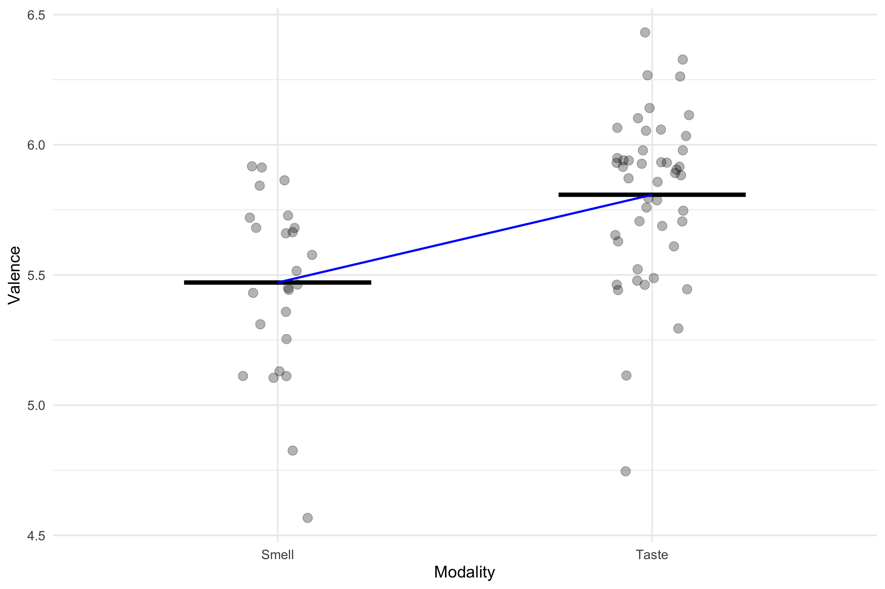
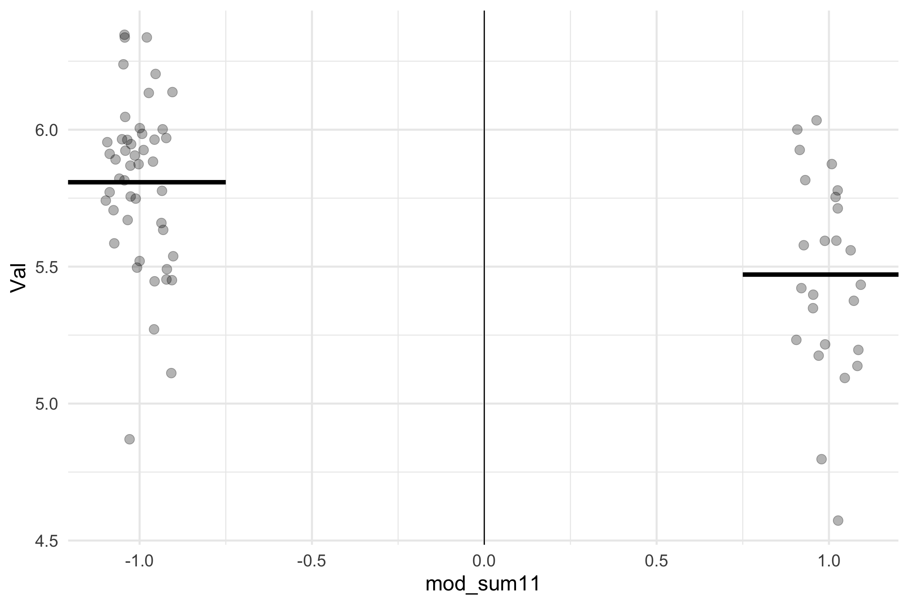

Package Version Citation
1 afex 1.1.1 @afex
2 base 4.2.2 @base
3 easystats 0.6.0.8 @easystats
4 emmeans 1.8.0 @emmeans
5 faux 1.1.0 @faux
6 gt 0.8.0 @gt
7 here 1.0.1 @here
8 kableExtra 1.3.4 @kableExtra
9 knitr 1.41 @knitr2014; @knitr2015; @knitr2022
10 modelbased 0.8.6.3 @modelbased
11 pacman 0.5.1 @pacman
12 parameters 0.21.1.2 @parameters
13 performance 0.10.4.1 @performance
14 rmarkdown 2.14 @rmarkdown2018; @rmarkdown2020; @rmarkdown2022
15 supernova 2.5.6 @supernova
16 tidyverse 1.3.2 @tidyverse
17 ungeviz 0.1.0 @ungevizGLM 2: Categorical Predictors
Princeton University
Jason Geller, PH.D.(he/him)
2023-10-23
Announcements
Final paper plan is due next week
Keanan Joyner is giving a talk tomorrow (12:00 P.M.)
- No workshop
Packages
Follow Along
https://github.com/jgeller112/PSY503-F2023/blob/main/slides/09-Cat-Reg/09-Cat-Pred.qmd
Today
How to interpret linear models with categorical predictors
- Two or more levels
Explain the different ways to break down categorical predictors in linear models
Dummy coding
Sum Coding
Deviation coding
DIY/custom contrasts
Multiple comparisons
Plotting
F-Distribution/F-test
F-Distribution/F-test
\[F = \frac{SS_{Explained}/df1 (p-1)}{SS_{Unexplained}/df2(n-p)} = \frac{MS_{Explained}}{MS_{Unexplained}}\]
MS explainedrepresents the reduction in error achieved by the modelMS unexplainedtells us how much variation is left over from the complex model
Modeling Categorical Variables
Today’s dataset
Winter(2016)
Are smell words (e.g., rancid) rated as more negative/unpleasant than taste words (e.g., sweet)?
- 1 to 9 rating scale
senses<- read_csv(here::here("slides/09-Cat-Reg/data/winter_2016_senses_valence.csv"))
senses_filt <- senses %>%
filter(Modality=="Taste" | Modality=="Smell")
glimpse(senses_filt)Rows: 72
Columns: 3
$ Word <chr> "acidic", "acrid", "alcoholic", "antiseptic", "aromatic", "as…
$ Modality <chr> "Taste", "Smell", "Taste", "Smell", "Smell", "Taste", "Taste"…
$ Val <dbl> 5.539592, 5.173947, 5.557228, 5.511795, 5.952941, 5.965000, 6…Linear Model
\[{Y_i} = b_0 + b_1 {X_i} + e\]
So far predictor variable has been continuous
We can also use linear modeling for categorical variables!
Categorical Variables
Terminology
Factor: a variable with a fix set of categories
Levels: The individual categories within a factor
In our dataset, what is the factor and what are its levels?
[1] FALSE# A tibble: 72 × 3
Word Modality Val
<chr> <fct> <dbl>
1 acidic Taste 5.54
2 acrid Smell 5.17
3 alcoholic Taste 5.56
4 antiseptic Smell 5.51
5 aromatic Smell 5.95
6 astringent Taste 5.96
7 barbecued Taste 6.05
8 beery Taste 6.07
9 bitter Taste 5.12
10 bland Taste 5.75
# ℹ 62 more rowsImportant
Always make sure categorical variables are labeled as factors in your dataset
Linear Modeling and t-tests/ANOVAs
What do we do in linear modeling?
- Fit a line (least squares method)
Linear Modeling and t-tests/ANOVAs
Within a t-test/ANOVA framework we want to know if means differ between groups
Fit a line
Single Line
We have two equations
\(y = b_0\) = intercept(mean of smell)
\(y = b_0\) = intercept(mean of touch)
How do we get one linear equation?
Dummy Coding/Treatment Coding
Dummy Coding/Treatment Coding
R’s default system
Start with \(K\) levels
Break variable into \(K\)-1 dummy variables, which are coded as 0 and 1
Variable coded as 0 is with reference level
R does this automatically (0 = whatever comes first alphabetically)
Smell = 0
Taste = 1
Dummy Coding/Treatment Coding
\[\operatorname{Valence} = b_0 + b_{1}(X_i) + \epsilon\]
- Prediction for Smell \(X_i =0\)
\[\hat{\operatorname{Val}} = b_0 + b_{1}(\operatorname{Modality}_{\operatorname{Taste}}0) + \epsilon\] \[ \operatorname{\bar{Y}_{smell}} = b_0 \]
- Prediction for Taste \(X_i =1\)
\[\operatorname{Val} = b_0 + b_{1}(\operatorname{Modality}_{\operatorname{Taste}}1) + \epsilon\] \[\operatorname{\bar{Y}_{taste}} = b_0 + b_1(\operatorname{Modality}_{\operatorname{Taste}}1)\]
Dummy coding
## dummy coding
senses_dum <- senses_filt %>%
mutate(mod=ifelse(Modality=="Smell", 0, 1))
senses_dum# A tibble: 72 × 4
Word Modality Val mod
<chr> <chr> <dbl> <dbl>
1 acidic Taste 5.54 1
2 acrid Smell 5.17 0
3 alcoholic Taste 5.56 1
4 antiseptic Smell 5.51 0
5 aromatic Smell 5.95 0
6 astringent Taste 5.96 1
7 barbecued Taste 6.05 1
8 beery Taste 6.07 1
9 bitter Taste 5.12 1
10 bland Taste 5.75 1
# ℹ 62 more rowsDummy coded regression
| term | estimate | std.error | statistic | p.value | conf.low | conf.high |
|---|---|---|---|---|---|---|
| (Intercept) | 5.4710116 | 0.0629655 | 86.889060 | 0.00e+00 | 5.3454309 | 5.5965923 |
| mod | 0.3371123 | 0.0779327 | 4.325684 | 4.95e-05 | 0.1816804 | 0.4925442 |
\(\hat{b_0}\): The mean of smell (5.47). When X = 0 (Smell), y = 5.47
\(\hat{b_1}\):
Categorical contrast coding
\[slope=\frac{\mu_{diff}}{run}\]
Dummy Coded Regression
| term | estimate | std.error | statistic | p.value | conf.low | conf.high |
|---|---|---|---|---|---|---|
| (Intercept) | 5.4710116 | 0.0629655 | 86.889060 | 0.00e+00 | 5.3454309 | 5.5965923 |
| mod | 0.3371123 | 0.0779327 | 4.325684 | 4.95e-05 | 0.1816804 | 0.4925442 |
- \(\hat{b_1}\): The mean difference between the two groups. If you go from one category to another, there is a .337 difference between the two groups
Calculate Means
Let’s calculate the means for each group with this equation
Change Reference Level
| term | estimate | std.error | statistic | p.value | conf.low | conf.high |
|---|---|---|---|---|---|---|
| (Intercept) | 5.8081239 | 0.0459223 | 126.477205 | 0.00e+00 | 5.7165348 | 5.8997130 |
| mod1Smell | -0.3371123 | 0.0779327 | -4.325684 | 4.95e-05 | -0.4925442 | -0.1816804 |
Contrast coding/Sum-to-zero
Deviation coding/sum coding
So far the intercept at 0 has referred to a particular baseline or reference level
Sum-to-zero coding changes the intercept to correspond to mean of the means (grand mean)
\[\frac{\mu_1 + \mu_2}{2}\]
Note
When sample sizes for each group are equal the grand mean and mean of means will be equal
Deviation coding (.5, -.5)
Note
Lot’s of confusion over terms. I will be using Lisa Debruine’s definitions https://debruine.github.io/faux/articles/contrasts.html
\(\hat{b_0}\) (intercept) is now the grand mean
Slope is still the difference
Deviation coding
Deviation Coding Results
| term | estimate | std.error | statistic | p.value | conf.low | conf.high |
|---|---|---|---|---|---|---|
| (Intercept) | 5.6395677 | 0.0389664 | 144.729132 | 0.00e+00 | 5.5618518 | 5.7172837 |
| mod_dev1 | -0.3371123 | 0.0779327 | -4.325684 | 4.95e-05 | -0.4925442 | -0.1816804 |
\(\hat{b_0}\): The value of the intercept is the mean of the means (5.64)
\(\hat{b_1}\): The difference between Smell and taste
\(\bar{Y}_{smell} = b_0 + b_1(.5)\)
\(\bar{Y}_{taste}: b_0 + b_1(-.5)\)
Sum Coding
- 1 and -1
Sum Coding (-1 + 1) Interpretation
What does this do to our interpretation?
Intercept is still centered at 0 (grand mean)
Slope is still the same (difference between categories) but:
Stepping from one category to another (the run) results in overall change of 2
Results are halved
Sum Coding (-1 + 1) Interpretation
Sum Coding (+1, -1) Model Results
| term | estimate | std.error | statistic | p.value | conf.low | conf.high |
|---|---|---|---|---|---|---|
| (Intercept) | 5.6395677 | 0.0389664 | 144.729132 | 0.00e+00 | 5.5618518 | 5.7172837 |
| mod_sum11 | -0.1685562 | 0.0389664 | -4.325684 | 4.95e-05 | -0.2462721 | -0.0908402 |
\(\hat{b_0}\): The grand mean of Smell and taste
\(\hat{b_1}\): the difference between what we coded as 1 and the grand mean, which is half the difference between the two conditions.
\(\bar{Y}_{smell} = b_0 + b_1(1)\)
\(\bar{Y}_{taste}: b_0 + b_1(-1)\)
Why -0.5 and +0.5?

Write-up
| term | estimate | std.error | statistic | p.value | conf.low | conf.high |
|---|---|---|---|---|---|---|
| (Intercept) | 5.8081239 | 0.0459223 | 126.477205 | 0.00e+00 | 5.7165348 | 5.8997130 |
| mod1Smell | -0.3371123 | 0.0779327 | -4.325684 | 4.95e-05 | -0.4925442 | -0.1816804 |
Tip
We used deviation coding (0.5, -0.5) to look at the effect of taste and smell words on valence
There was a statistically significant difference between Smell (M =5.47) and Taste Words (M = 5.81) in valence ratings , b = -.33, t =-4.33, 95% CI [-0.49, -0.13], p <.001 . Taste words were rated as more pleasant than smell words.
t-test
- Same results!
Multiple Levels
Linear models with multiple levels
So far we have only been looking at two levels
We easily can extend linear modeling approach to multiple levels
Let’s go back to our sense data
- Before filtering it down to 2 senses it had 5 senses!
Treatment/dummy coding: multilevel factors
| term | estimate | std.error | statistic | p.value |
|---|---|---|---|---|
| (Intercept) | 5.5796631 | 0.0188944 | 295.307709 | 0.0000000 |
| ModalitySmell | -0.1086515 | 0.0564307 | -1.925396 | 0.0548885 |
| ModalitySound | -0.1744704 | 0.0375767 | -4.643046 | 0.0000047 |
| ModalityTaste | 0.2284608 | 0.0431387 | 5.295957 | 0.0000002 |
| ModalityTouch | -0.0452281 | 0.0373697 | -1.210289 | 0.2268828 |
- What is going on here? There are only 4 levels, but we actually have 5 levels.
Dummy Coding Extension
Create one fewer dummy codes than levels (K (number of levels)-1)
Choose one of your levels as baseline and assign all zeros for this level across each dummy code
For first dummy code, assign 1 to first group and 0s for rest of levels
For the second dummy code, assign 1 to second group and 0s for rest of levels
For third dummy code, assign 1 to third group and 0s for rest of levels
For fourth dummy code, assign 1 to fourth group and 0s for rest of levels
Dummy Coding Extension
| .Smell-Sight | .Sound-Sight | .Taste-Sight | .Touch-Sight | |
|---|---|---|---|---|
| Sight | 0 | 0 | 0 | 0 |
| Smell | 1 | 0 | 0 | 0 |
| Sound | 0 | 1 | 0 | 0 |
| Taste | 0 | 0 | 1 | 0 |
| Touch | 0 | 0 | 0 | 1 |
Dummy Coding Extension
\[ \begin{align*} \operatorname{Val} &= b + b_{1}(\operatorname{Modality}_{\operatorname{Smell}}) \\ &\quad + b_{2}(\operatorname{Modality}_{\operatorname{Sound}}) \\ &\quad + b_{3}(\operatorname{Modality}_{\operatorname{Taste}}) \\ &\quad + b_{4}(\operatorname{Modality}_{\operatorname{Touch}}) + e \end{align*} \]
Dummy Coding Extension
| term | estimate | std.error | statistic | p.value |
|---|---|---|---|---|
| (Intercept) | 5.5796631 | 0.0188944 | 295.307709 | 0.0000000 |
| mod_treat.Smell-Sight | -0.1086515 | 0.0564307 | -1.925396 | 0.0548885 |
| mod_treat.Sound-Sight | -0.1744704 | 0.0375767 | -4.643046 | 0.0000047 |
| mod_treat.Taste-Sight | 0.2284608 | 0.0431387 | 5.295957 | 0.0000002 |
| mod_treat.Touch-Sight | -0.0452281 | 0.0373697 | -1.210289 | 0.2268828 |
Sum Coding
Intercept = grand mean
Estimates = level vs. grand mean
- Assign 1 to target level, -1 to non-target level, 0 dropped
Sum Coding
| .Sight-intercept | .Smell-intercept | .Sound-intercept | .Taste-intercept | |
|---|---|---|---|---|
| Sight | 1 | 0 | 0 | 0 |
| Smell | 0 | 1 | 0 | 0 |
| Sound | 0 | 0 | 1 | 0 |
| Taste | 0 | 0 | 0 | 1 |
| Touch | -1 | -1 | -1 | -1 |
Sum Coding
| term | estimate | std.error | statistic | p.value |
|---|---|---|---|---|
| (Intercept) | 5.5596852 | 0.0164717 | 337.5305008 | 0.0000000 |
| sum.Sight-intercept | 0.0199778 | 0.0220344 | 0.9066657 | 0.3651295 |
| sum.Smell-intercept | -0.0886737 | 0.0443596 | -1.9989743 | 0.0462873 |
| sum.Sound-intercept | -0.1544925 | 0.0300719 | -5.1374316 | 0.0000004 |
| sum.Taste-intercept | 0.2484387 | 0.0342591 | 7.2517565 | 0.0000000 |
Deviation coding
Intercept = grand mean
Estimates = deviation/difference between level and reference level
- The target level gets:
\[ \frac{k-1}{k} \]
- Any non-target level gets:
\[ -\frac{1}{k} \]
Deviation coding
## deviation coding
## baseline Sight it comes first in alphabet
dat_dev <- senses %>%
mutate(SmellvSight = if_else(Modality == "Smell", 4/5, -1/5), # target A2
SoundvSight = if_else(Modality == "Sound", 4/5, -1/5),
TastevSight = if_else(Modality=="Taste", 4/5, -1/5),
TouchvSight = if_else(Modality=="Touch", 4/5, -1/5))
# target A3
# fit lm with new codesDeviation coding
| .Smell-Sight | .Sound-Sight | .Taste-Sight | .Touch-Sight | |
|---|---|---|---|---|
| Sight | -0.2 | -0.2 | -0.2 | -0.2 |
| Smell | 0.8 | -0.2 | -0.2 | -0.2 |
| Sound | -0.2 | 0.8 | -0.2 | -0.2 |
| Taste | -0.2 | -0.2 | 0.8 | -0.2 |
| Touch | -0.2 | -0.2 | -0.2 | 0.8 |
Deviation coding
| term | estimate | std.error | statistic | p.value |
|---|---|---|---|---|
| (Intercept) | 5.5596852 | 0.0164717 | 337.530501 | 0.0000000 |
| new.Smell-Sight | -0.1086515 | 0.0564307 | -1.925396 | 0.0548885 |
| new.Sound-Sight | -0.1744704 | 0.0375767 | -4.643046 | 0.0000047 |
| new.Taste-Sight | 0.2284608 | 0.0431387 | 5.295957 | 0.0000002 |
| new.Touch-Sight | -0.0452281 | 0.0373697 | -1.210289 | 0.2268828 |
DIY Contrasts
Rule 1: Groups coded with positive weights compared to groups with negative wights
Rule 2: The sum of weights you use should be zero
Rule 3: if a group is not involved in a comparison, assign it a weight of 0
Rule 4: Initial weight assigned to groups should be equal to # groups in opposite chunk of variation
Rule 5: To get final weights, divide initial weight by number of groups with non-zero weights.
Planned Contrast Example
Chemical vs. Non-chemical senses
Smell and Taste Sight, Touch, Sound Contrast Positive Negative Sign of weight 3 2 Magnitude 3,3 2, 2, 2 Initial weight 3/5, 3/5 -2/5, -2/5, -2/5 Final weight
Planned Contrast Example
The General Linear F-Test
3 or more groups
- Analysis of Variance (ANOVA)
We can think about the hypotheses for the overall test being:
\[H_0: \mu_1 = \mu_2 = \mu_3 = \mu_4 = \mu_5\]\[H_1: b_1 \neq b_2 \neq b_3 \neq b_4 \neq b_5\]\[H_1: \mu_1 \neq \mu_2 \neq \mu_3 \neq \mu_4 \neq \mu_5\]
Hello Again Sums of Squares
Field “Adventures in Statistics”
Empty Model
\[Y_{ij} = \mu + \epsilon\]
- Restricted model (empty model): each score \(Y_{ij}\)is the result of a single population mean plus random error
\[SS_{error}(empty)=\sum(y_i-\bar{y})^2=SS_{total}\]
- where:
\(y_i\) = observed value \(\bar{y}\) = mean value
Full Model
\(Y_{ij} = \mu_j + e_{ij}\)
- Full model (all predictors/levels): each score \(Y_{ij}\) is the result of a different group mean plus random error
\(SS_{error}(Full)=\sum(y_{ij}-\hat{y}_{ij})^2 = \\ SS_{unexplained}\)
- where:
\(i\) = Person \(j\) = Group \(y_i\) = Observed value \(\hat{y}\) = Value estimated by regression line
F-ratio
- F-ratio is measure of signal to noise
\[\begin{aligned} &&df_{empty} = N - 1\\ &&df_{full} = N - p\\ &&SSE_{empty}=SS_{total}\\&&SSE_{full}=SS_{unexplained}\end{aligned}\]
F-ratio
\[F = \frac{SS_{total}-SS_{unexplained}/{df_{empty}-df_{full}} (p-1)}{SS_{unexplained}/df_{full}(N-p)} = \frac{MS_{explained}}{MS_{unexplained}}\]
ANOVA Table
aov1<-aov(Val~ NULL, data=senses)
aov2 <- aov(Val~Modality, data=senses)
#anova(aov1, aov2) compare two models
aov_em <- aov(Val~Modality, data=senses)
parameters::model_parameters(aov_em) %>%
kable()| Parameter | Sum_Squares | df | Mean_Square | F | p |
|---|---|---|---|---|---|
| Modality | 4.814548 | 4 | 1.2036370 | 17.02801 | 0 |
| Residuals | 28.274280 | 400 | 0.0706857 | NA | NA |
- The Modality factor is significant. Now what?
Post-Hoc Comparisons
The second best package ever created:
emmeansAllows one to extract means for the model and also test comparisons of interest
Pairwise tests
- Get means
# get pairwise tests between all groups
#specs = factor
emmeans::emmeans(aov_em, specs = "Modality")%>%
kable()%>%
kable_styling(font_size = 24) %>%
column_spec(2, color = "white",
background = "red")| Modality | emmean | SE | df | lower.CL | upper.CL |
|---|---|---|---|---|---|
| Sight | 5.480531 | 0.0286568 | 400 | 5.424194 | 5.536867 |
| Smell | 5.643016 | 0.0323027 | 400 | 5.579511 | 5.706520 |
| Sound | 5.542073 | 0.0489734 | 400 | 5.445796 | 5.638351 |
| Taste | 5.636120 | 0.0339626 | 400 | 5.569352 | 5.702887 |
| Touch | 5.496687 | 0.0164950 | 400 | 5.464259 | 5.529115 |
Pairwise tests
- and pairwise comparisons
# get pairwise tests between all groups
means1 = emmeans::emmeans(aov_em, specs = "Modality")
knitr::kable(pairs(means1)) %>%
kable_styling(font_size = 24) %>%
column_spec(2, color = "white",
background = "red")| contrast | estimate | SE | df | t.ratio | p.value |
|---|---|---|---|---|---|
| Sight - Smell | -0.1624852 | 0.0405212 | 400 | -4.0098820 | 0.0006890 |
| Sight - Sound | -0.0615426 | 0.0705333 | 400 | -0.8725316 | 0.9068515 |
| Sight - Taste | -0.1555890 | 0.0370300 | 400 | -4.2017062 | 0.0003145 |
| Sight - Touch | -0.0161562 | 0.0185165 | 400 | -0.8725316 | 0.9068515 |
| Smell - Sound | 0.1009426 | 0.0603593 | 400 | 1.6723634 | 0.4522890 |
| Smell - Taste | 0.0068962 | 0.0079036 | 400 | 0.8725316 | 0.9068515 |
| Smell - Touch | 0.1463290 | 0.0347012 | 400 | 4.2168260 | 0.0002952 |
| Sound - Taste | -0.0940464 | 0.0669883 | 400 | -1.4039239 | 0.6254936 |
| Sound - Touch | 0.0453864 | 0.0520169 | 400 | 0.8725316 | 0.9068515 |
| Taste - Touch | 0.1394328 | 0.0350160 | 400 | 3.9819749 | 0.0007701 |
Planned Comparisons
contr <- list(
nonchem_vs_chem = c(-1/3, 1/2, -1/3, 1/2, -1/3))
emmeans::emmeans(aov_em, specs = "Modality") %>% contrast(method=contr) %>%
summary(infer=TRUE) %>%
kable()| contrast | estimate | SE | df | lower.CL | upper.CL | t.ratio | p.value |
|---|---|---|---|---|---|---|---|
| nonchem_vs_chem | 0.1331375 | 0.0368135 | 400 | 0.0607654 | 0.2055096 | 3.61654 | 0.0003368 |
Multiple Comparisons
Multiple Comparisons
We want our tests to find true positives and true negatives
Multiple comparisons
- Family-wise error rate
\[ FWER = 1 - (1 - \alpha)^k \]
k = number of comparisons
\(\alpha\)-inflation
- Testing each new pairwise comparison is costly
Bonferroni
\[\alpha / m\]
Where:
m = number f comparisons
\(\alpha\) = Level of significance
Controls for false positives (Type I errors)
Overly conservative
- Leads to false negatives (Type II errors)
Holm-Bonferroni
- Strikes a balance between Type I and Type II errors
- Sort p-values from smallest to largest
- Test whether p < \(\frac {\alpha} {m+ 1-k}\)
- If so, reject and move to the next
Many Multiple Comparison Corrections
- Tukey
- Scheffe
- Dunnett
- Fisher’s LSD (least significant difference)
- Newman-Keuls
Note
- Find what your field does and, more importantly, justify your decisions
emmeans
- Correct p-values for multiple comparisons using the adjust argument
| contrast | estimate | SE | df | t.ratio | p.value |
|---|---|---|---|---|---|
| Sight - Smell | -0.1624852 | 0.0405212 | 400 | -4.0098820 | 0.0007249 |
| Sight - Sound | -0.0615426 | 0.0705333 | 400 | -0.8725316 | 1.0000000 |
| Sight - Taste | -0.1555890 | 0.0370300 | 400 | -4.2017062 | 0.0003270 |
| Sight - Touch | -0.0161562 | 0.0185165 | 400 | -0.8725316 | 1.0000000 |
| Smell - Sound | 0.1009426 | 0.0603593 | 400 | 1.6723634 | 0.9523463 |
| Smell - Taste | 0.0068962 | 0.0079036 | 400 | 0.8725316 | 1.0000000 |
| Smell - Touch | 0.1463290 | 0.0347012 | 400 | 4.2168260 | 0.0003067 |
| Sound - Taste | -0.0940464 | 0.0669883 | 400 | -1.4039239 | 1.0000000 |
| Sound - Touch | 0.0453864 | 0.0520169 | 400 | 0.8725316 | 1.0000000 |
| Taste - Touch | 0.1394328 | 0.0350160 | 400 | 3.9819749 | 0.0008118 |
emmeans
- Adjust CIs for multiple comparisons
| contrast | estimate | SE | df | lower.CL | upper.CL |
|---|---|---|---|---|---|
| Sight - Smell | -0.1624852 | 0.0405212 | 400 | -0.2768640 | -0.0481063 |
| Sight - Sound | -0.0615426 | 0.0705333 | 400 | -0.2606364 | 0.1375513 |
| Sight - Taste | -0.1555890 | 0.0370300 | 400 | -0.2601132 | -0.0510648 |
| Sight - Touch | -0.0161562 | 0.0185165 | 400 | -0.0684224 | 0.0361101 |
| Smell - Sound | 0.1009426 | 0.0603593 | 400 | -0.0694330 | 0.2713182 |
| Smell - Taste | 0.0068962 | 0.0079036 | 400 | -0.0154133 | 0.0292057 |
| Smell - Touch | 0.1463290 | 0.0347012 | 400 | 0.0483781 | 0.2442798 |
| Sound - Taste | -0.0940464 | 0.0669883 | 400 | -0.2831338 | 0.0950409 |
| Sound - Touch | 0.0453864 | 0.0520169 | 400 | -0.1014413 | 0.1922140 |
| Taste - Touch | 0.1394328 | 0.0350160 | 400 | 0.0405934 | 0.2382722 |
ANOVA Write-up
Factor
- Significance tests (F, degrees of freedom, p, effect size)
Post-hoc comparisons
Difference
Significance tests (t, degrees of freedom, p, effect size)
\(\alpha\)-adjustment used
Adjusted p-value
Plotting Group Means
Plotting Group Means
Wrap-up
Linear models can be easily extended to categorical predictors
Interpretation of intercept and slope are a bit different
- Depends on coding scheme you use
Interpretation of test statistics and statistical significance are the same
- So are assumptions checks!
Assumption checks
Next Week
- Effect size and power analysis!
PSY 503: Foundations of Statistics in Psychology